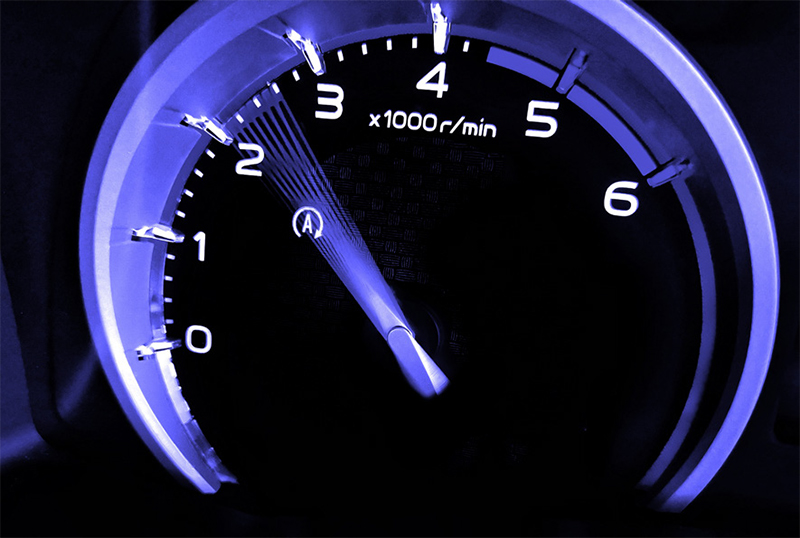
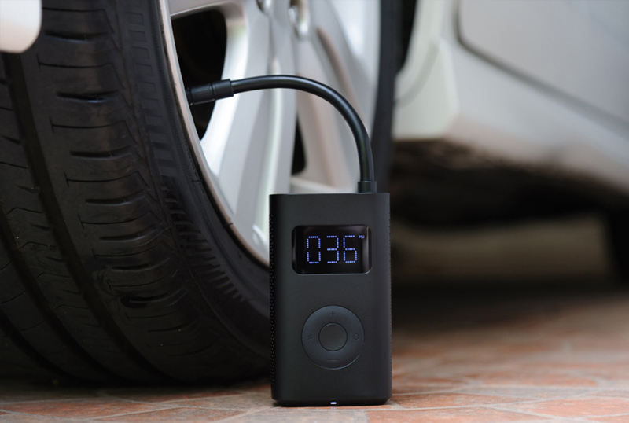
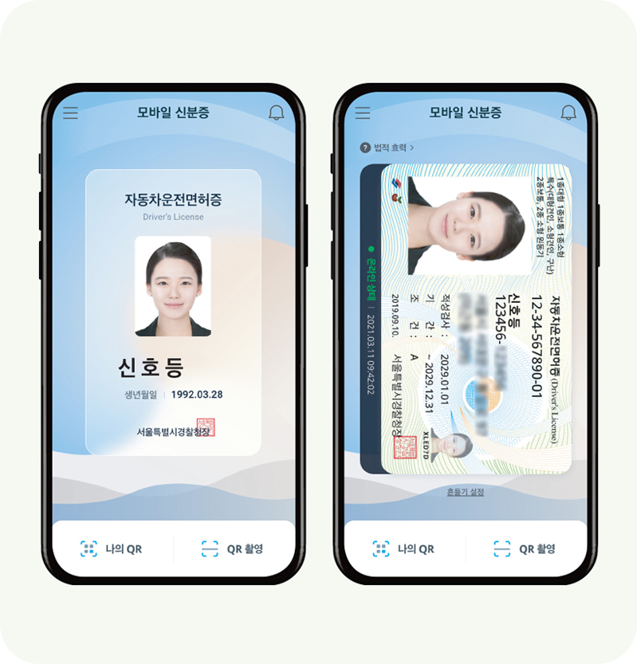

친환경 운전생활의 시작
감속 운전과 모바일 운전면허증 이용
하지만 전 세계적으로 이산화탄소 배출량이 가장 많은 곳 중 하나로 도로가 꼽히는 만큼, 환경을 위한 방안을
강구해야 할 때다. 이에 운전자가 실천할 수 있는 가장 쉽고 빠른 친환경 운전생활에 대해 알아본다.
2022년 기준 국내 자동차 등록대수는 2,550만 대(출처. 국토교통부)이다. 그만큼 현대인에게 운전은 필수적인 부분이다. 탄소배출을 줄이기 위해 내연기관차를 하루아침에 무공해 자동차로 바꾸는 것도 어려운 현실. 그렇다면 운전자로서 탄소중립을 실천하는 방법은 정말 없는 것일까?
답은 그렇지 않다. 한국기후·환경네트워크에 따르면 경제속도를 준수하는 것만으로도 연간 이산화탄소 배출량을 322kg 감축할 수 있다. 이를 비용으로 환산하면 1인당 약 27만 원 정도다. 경제속도는 자동차 배기량에 따라 달라지는데, 일반적으로 엔진 회전 속도가 2,000~2,500RPM이 되도록 유지하는 것이 적당하다.
급출발, 급가속, 급감속 또한 온실가스 배출과 미세먼지를 유발하는 대표적인 운전 습관이다. 불필요한 연료 낭비까지 더해져 환경적인 측면에서는 최악의 운전 습관이라고 해도 과언이 아니다. 불필요한 엔진 예열 또한 불필요하게 탄소를 배출하게 되는 원인으로 꼽힌다. 이 밖에도 탄소중립을 실천하는 운전법으로는 타이어 적정 공기압 유지, 불필요한 짐 덜어내기 등이 있다.
전 세계적으로 온실가스 배출이 가장 많은 분야는 수송 분야다. 우리나라도 마찬가지다. 국내 수송 분야 온실가스 배출량 중 도로에서 발생하는 비율은 96.5%(출처. 온실가스종합정보센터(2020년 기준))에 달한다.
탄소중립 운전법은 환경과 경제적 비용을 줄일 수 있을 뿐만 아니라 안전까지 생각한 운전 습관이다. 작은 실천도 매일 이용하는 도로에서라면 큰 효과를 가져올 수 있지 않을까. 오늘부터 안전과 환경을 위한 탄소중립 운전을 실천해 보자.


최근 신분증이 사라지고 있다. 휴대전화만으로도 신분을 확인할 수 있는 모바일 신분증 사용이 일상이 되어가는 중이다. 도로교통공단 또한 지난 2021년 세계 최초 모바일 운전면허증을 도입해 신원확인 패러다임의 전환을 시도하며 변화하는 시대에 발 빠르게 대응했다.
모바일 운전면허증은 스마트 폰에 탑재하는 디지털 운전면허증으로 행정안전부, 한국조폐공사 등과의 협업으로 개발됐다. 실물 운전면허증을 가지고 다니지 않아도 언제나 신원확인이 가능하다는 편리함도 장점으로 손꼽히지만 모바일 운전면허증의 진가는 또 다른 곳에서 발휘된다.
먼저, 플라스틱을 사용하지 않아도 된다는 점이다. 기존 운전면허증이 플라스틱으로 발급되었던 것에 비해, 모바일 운전면허증은 휴대전화만 있으면 쉽게 발급할 수 있어 자원낭비를 줄일 수 있다. 플라스틱으로 인한 환경피해가 심각하다는 것은 이미 누구나 아는 사실. 최근 환경부도 ‘전 주기 탈 플라스틱 대책’을 발표하며 오는 2025년까지 폐플라스틱 발생량을 지난해 대비 20% 감축하는 것을 목표로 삼았다. 모바일 운전면허증과 같은 디지털 신분증은 전 국민이 이용하는 서비스인 만큼 탈 플라스틱 운동에 많은 효과를 거둘 것으로 기대된다. 아직까지는 실물 운전면허증 발급이 필수이지만, 도로교통공단은 모바일 운전면허증이 실물 운전면허증을 완전 대체할 수 있도록 사용범위를 더욱 확대해 나갈 방침이다.

코로나19로 인해 디지털 행정서비스가 발달하면서 모바일 운전면허증의 장점은 더욱 빛을 발하고 있다. 비대면 서비스가 확대되면서 다양한 민원 시스템 또한 비대면 서비스로 전환됐다. 모바일 운전면허증은 이러한 시대환경을 반영한 결과라고 할 수 있다.
도로교통공단은 이에 한 발 더 나아가, 탈 플라스틱뿐만 아니라 종이 없는 시험장을 구현하는 사업과 연계해 모바일 운전면허증을 활용해 나갈 계획이다. 도로교통공단의 중장기 계획을 살펴보면, 2024년까지 모바일 운전면허증 사용처를 확대하고, 2025년에는 비대면 민원접수 시스템을 고도화한다. 또한 2026년이 되면 종이 없는 시험장을 구현해 친환경적인 운전면허 발급 시스템을 구축할 계획이다.
비대면 민원접수 시스템은 경제적, 환경적 비용을 줄일 수 있을 뿐만 아니라, 많은 국민들이 보다 편리하게 민원 서비스를 누릴 수 있는 방안으로 다양한 정부부처 및 공공기관에서도 추진 중인 사업이다. 도로교통공단은 여기에 더해, 운전면허시험에 사용되는 종이 사용을 최소화하는 방식으로 관련 사업을 친환경적으로 바꾸어 나갈 예정이다.